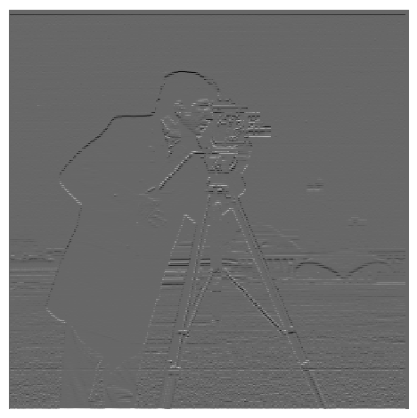
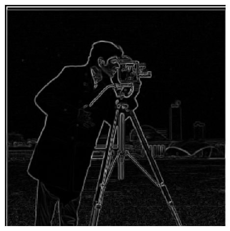
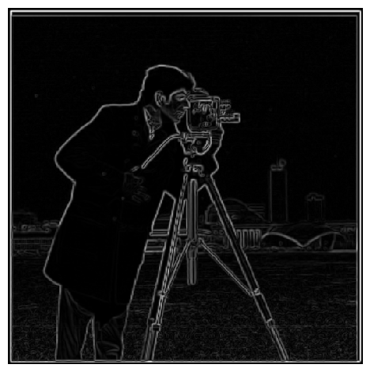

CS 180 Project 2
Finite Difference Operator
The finite difference kernel was used in the x and y directions to find the partial derivatives with respect to x and y. Those results were then treated as a 2D vector, and its magnitude was produced by finding its L2 norm. We then In other words, if the image was denoted by
Then we threshold this value to remove as much noise as possible without compromising the true edges.
|  |
Derivative of Gaussian Filter
Since the image is still somewhat noisy, smoothing/blurring the image prior to convolving with the finite difference kernel helps remove some of that noise. Essentially, given a gaussian kernel
Because convolution is associative, we can either:
- Apply the gaussian filter to the image and then find the gradients of the blurred image
- Compute the derivative of the gaussian (DoG) by convolving the finite difference operators with the gaussian filter. Then, we can directly convolve the DoG filter to the image.
The results are as follows:
| Approach 1 | Approach 2 |
|---|---|
|  |  |
Notice that the results are less noisy, and produce practically identical.
Image "Sharpening"
The approach is to filter the high frequency values, and emphasize them by "adding" it to the original image. To find the high frequency values, we compute details = image - blurred, and thus our result becomes image + alpha * details, where alpha is a tunable constant. This can be computed by performing a single convolution. If we denote
Taj Mahal
| Original | ||
|---|---|---|
 |
The details of the tiles and path are much more prominent in the
| Original | ||
|---|---|---|
 |
 |
 |
Again, here we can see that the mountain's features are more visible.
Resharpening a Blurred Image
Taking the image of the pyramids, I blurred it to see if the process could add back in some of the details lost in the process.
| Original | Blurred | Reconstructed |
|---|---|---|
 |
 |
 |
The reconstructed image has quite a few artifacts since a lot of the finer details are lost to the blurring process. However, most of the features aren't washed away, unlike the blurred image.
Hybrid Images
To achieve a blurred image, I overlayed a low frequency and high frequency image. The low frequency image was produced by applying a gaussian blur. For the high frequency image, I took the difference between the original image and a blurred image.
Superman
I utilized a sigma of 12 for the low frequency and 6 for the high frequency.
Original Superman |
Original Clark Kent |
|---|---|
Low Pass Superman |
High Pass Clark Kent |

These are the Fourier transforms of each step of the process
Original Superman |
Original Clark Kent |
|---|---|
Low Pass |
High Pass |

Failure
This set of images just didn't seem to work since the retro Mario was much larger than the modern Mario. As such, a lot of the details got washed away in the background.
 |
 |
 |
|---|
Multiresolution Blending
Each level of the Gaussian stack is produced by blurring the previous level. The Laplacian stack is formed by taking differences of adjacent layers of the Gaussian stack. The last layer of the Gaussian stack is appended to the end of the Laplacian stack, so both end up with the same number of layers.
Pictured are layers 0, 2, and 4 of each layer of the Laplacian stack.
 |
 |
 |
|---|---|---|
 |
 |
 |
 |
 |
 |
End Result - Oraple:

Duck in the city:
 |
 |
 |
|---|
Result:

Purr-fect Conefection
 |
 |
 |
|---|
Result: